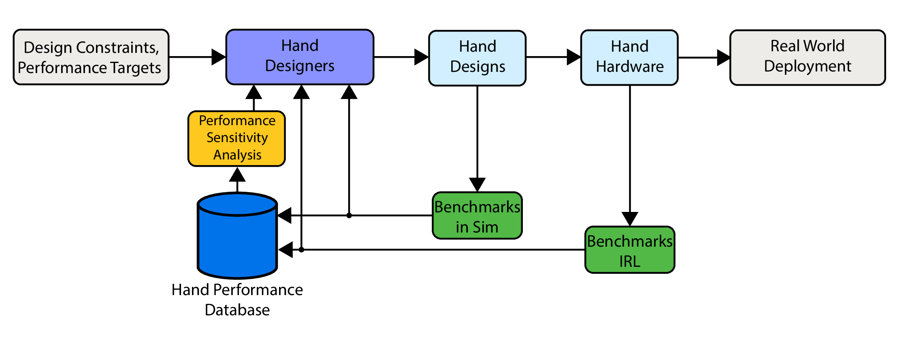

The complexity of robot hand design causes a disconnect in understanding how design choices affect system-level dexterous performance. There is an attribution problem. To approach this problem, hand performance benchmarks were divided into multiple levels based on the number of components in the system under test.
Solving the system-level attribution problem only using physical robot hands would be time consuming and costly. Simulation and rapid prototyping can enhance the process. The diagram below presents a hand design framework that uses simulation, prototyping, and sensitivity analysis to accelerate progress towards dexterity.